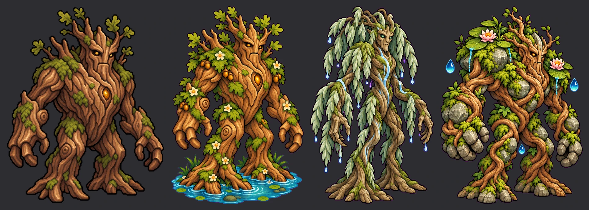
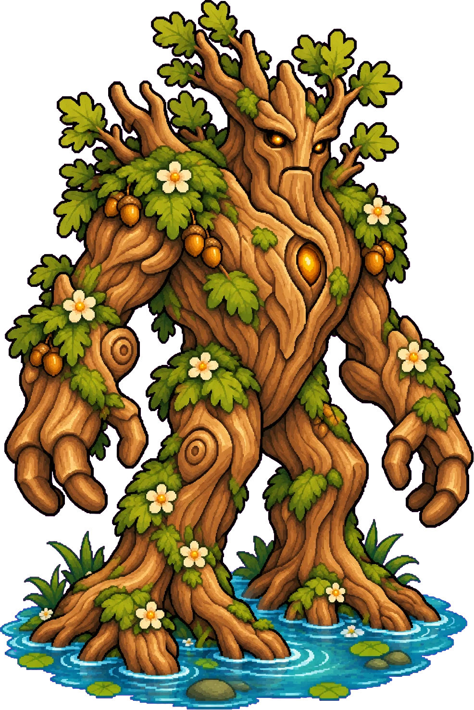
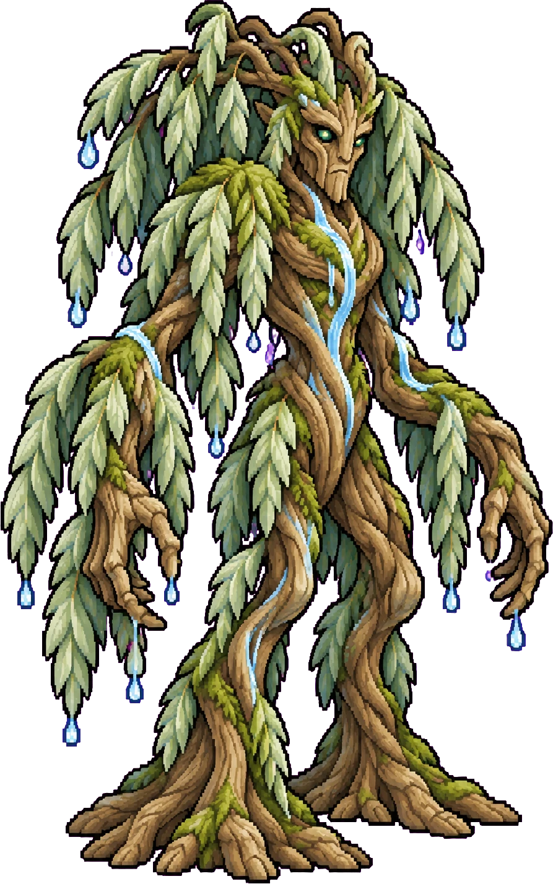
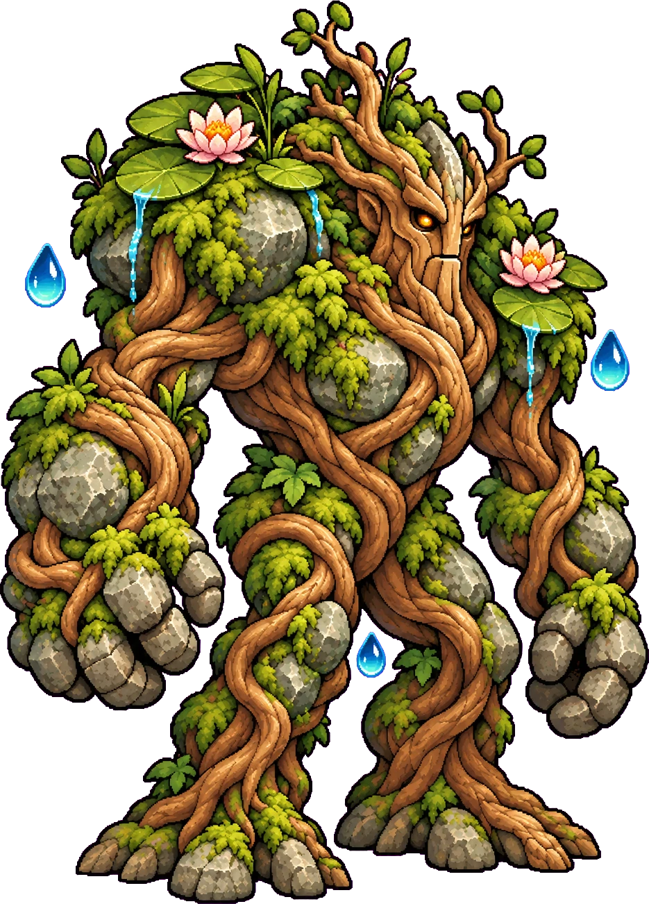

<meta charset="utf-8"><meta name="viewport" content="width=device-width,initial-scale=1">
<title>Treant Art Drafts</title>
<style>
:root{--bg:#f3efe9;--fg:#2a2420;--muted:#6b6058;--line:#d9d0c4;--card:#fffdf9;--accent:#7a3b2e;--mono:ui-monospace,Consolas,monospace}
@media (prefers-color-scheme:dark){:root{--bg:#1b1714;--fg:#ece4d8;--muted:#a09484;--line:#3a322b;--card:#241f1b;--accent:#d9a066;color-scheme:dark}}
html{background:var(--bg)}body{margin:0;background:var(--bg);color:var(--fg);font:16px/1.55 Georgia,serif;padding:28px max(16px,env(safe-area-inset-right,0px)) 64px max(16px,env(safe-area-inset-left,0px))}
main{max-width:1100px;margin:0 auto;display:flex;flex-direction:column;gap:28px}
h1{font:600 2rem/1.15 Georgia,serif;margin:0}h2{font:600 1.2rem/1.2 Georgia,serif;margin:0}
p{margin:0;max-width:65ch}.sub{color:var(--muted)}
.row{display:flex;flex-wrap:wrap;gap:16px;align-items:flex-end}
figure{margin:0;display:flex;flex-direction:column;gap:6px;min-width:0}
figure img{display:block;border:1px solid var(--line);background:var(--card);max-width:100%;height:auto}
figcaption{font:.8rem var(--mono);color:var(--muted)}
a{color:var(--accent)}
</style>
<main>
<header><h1>Treant Art Drafts</h1><p class="sub">Three new looks for the Druid's Treant, water and healing theme. Not in the game. Tap an image for full size.</p></header>
<section style="display:flex;flex-direction:column;gap:10px"><h2>Side by side (game size): current, A, B, C</h2>
<a href="treant-art/karsilastirma.webp" target="_blank"></a></section>
<section style="display:flex;flex-direction:column;gap:10px"><h2>Each draft (Sol 8/10 each)</h2>
<div class="row">
<figure><a href="treant-art/A.webp" target="_blank"></a><figcaption>A: old oak, roots in a pool, healing flowers</figcaption></figure>
<figure><a href="treant-art/B.webp" target="_blank"></a><figcaption>B: willow, hanging rain branches, flowing water</figcaption></figure>
<figure><a href="treant-art/C.webp" target="_blank"></a><figcaption>C: root and stone body, lilies, glowing drops</figcaption></figure>
</div></section>
<p class="sub">Known: all three are a little softer and more painted than the current sprite; poses A and B face almost straight ahead, C faces 3/4 right best.</p>
</main>
